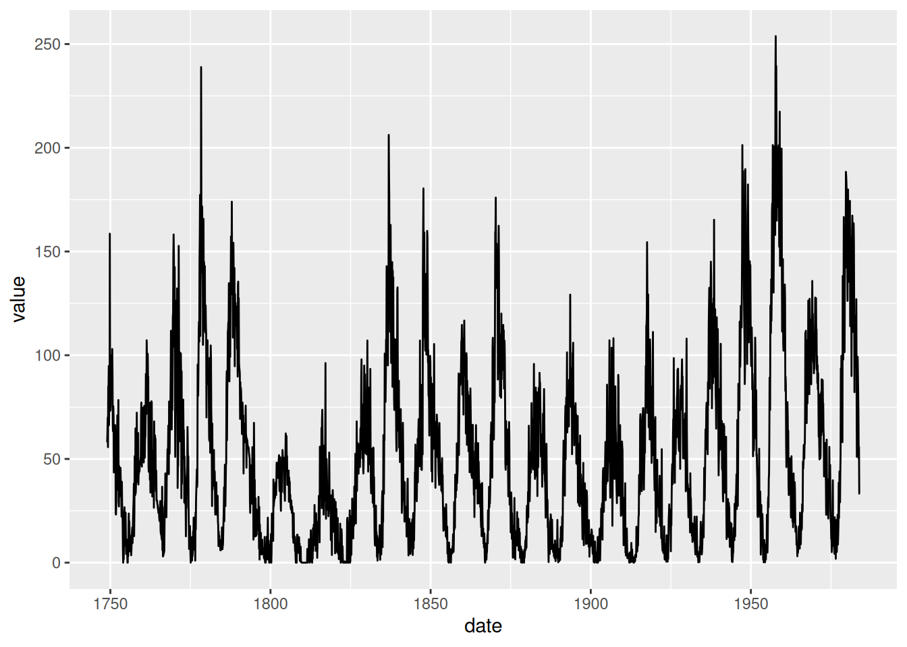

install.packages(c("lubridate", "parsedate", "zoo"))
install.packages(c("ggplot2", "dygraphs"))24 Manipuler des données temporelles
24.1 Tâches concernées et recommandations
L’utilisateur souhaite manipuler des dates (import et export du format Date, manipulation et formatage de la date, différentes fréquences) ou des séries temporelles (création d’objets ts en R).
Information sur les packages utilisés
- Les packages
baseetstatsproposent déjà une bonne diversité de fonctionnalités pour traiter les dates et séries temporelles ; - Le package
lubridateajoute des fonctionnalités supplémentaires sur le traitement des dates ; - Le package
parsedatepermet de contrôler les normes de format de date ; - Le package
zoopermet de gérer les données journalières ou infra-journalières ; - Pour les graphiques, ce sont les packages
ggplot2etdygraphsqui seront utilisés.
Pour installer les packages :
Caution
La fonction as.Date() existe dans les packages base et zoo, mais n’a pas la même fonctionnalité. À chaque fois qu’elle sera utilisée, on précisera son package d’origine au moyen de :: (base::as.Date() ou zoo::as.Date()).
24.2 Définitions
24.2.1 Les dates
Une date en R signifie généralement un jour d’une année. Elle peut s’écrire sous différents formats :
| Format | Type | Exemple (Noël 2023) |
|---|---|---|
| Format européen | JJ/MM/AAAA | 25/12/2023 |
| Format américain | AAAA-MM-JJ | 2023-12-25 |
Une date peut aussi désigner un horaire ou un moment précis. On peut alors spécifier les heures, les minutes, les secondes.
24.2.2 Les séries temporelles
Une série temporelle est une données indexées sur le temps. Généralement on parle de séries mensuelles lorsque le pas entre chaque date est un mois mais on parle aussi de données annuelles, trimestrielles ou journalières voire plus haute fréquence.
24.3 Création de date
24.3.1 Le format Date en R
Pour créer une date en R, il suffit de faire appel à la fonction as.Date() du package base. Par défaut, l’argument format correspond au format américain :
M_Drucker_birth <- base::as.Date(x = "1942-09-12")Il suffit de le changer pour créer une date à partir d’un autre format :
noel_2023 <- base::as.Date(x = "25/12/2023", format = "%d/%m/%Y")La liste des formats de données est disponible sur la page d’aide de strptime() (accessible via help(strptime)).
24.3.2 Les autres formats de date POSIXct et POSIXlt
Pour les horaires ou pour désigner un instant, il faut créer un objet de classe POSIXt. Pour cela, on peut utiliser les fonctions as.POSIXct() et as.POSIXlt().
- La fonction
as.POSIXct()(ct pour Calendar Time) va stocker la date sous la forme d’un nombre de secondes depuis le 1er janvier 1970. - La fonction
as.POSIXlt()(lt pour List Time) va stocker la date sous la forme d’une liste contenant tous les composants de la date (année, mois, jour, heure…).
pied_sur_la_lune <- as.POSIXct(x = "1969-07-21 02:56:20",
format = "%Y-%m-%d %H:%M:%S", tz = "UTC")24.3.3 Les différents fuseaux horaires
Ici le fuseau horaire (argument tz) est fixé sur UTC (Coordinated Universal Time = Temps Universel Coordonné). Mais il est possible d’appliquer différents fuseaux horaires à un évènement.
Par exemple :
Neil Armstrong a posé le pied sur la lune le 1969-07-21 03:56:20 à Paris mais le 1969-07-20 19:56:20 à Los Angeles.
heure_en_france <- as.POSIXct(x = pied_sur_la_lune, tz = "Europe/Paris")
heure_los_angeles <- as.POSIXct(x = pied_sur_la_lune, tz = "America/Los_Angeles")Pour connaître la liste des différents fuseaux horaires, il faut appeler la fonction OlsonNames() (du nom de l’Olson Database).
24.3.4 Gérer les changements d’heure
En France, depuis 1979, on avance d’une heure en mars pour l’heure d’été. Ainsi le fuseau horaire européen est un peu plus compliqué que le fuseau UTC (qui est linéaire tout au long de l’année).
Il suit 2 fuseaux :
- le CET (Central European Time) correspond à l’heure d’hiver. Cela vaut UTC+1.
- En été, on utilise le CEST (Central European Summer Time), qui est à UTC+2.
On entend aussi parler de GMT (Greenwich Mean Time) qui correspond à l’heure de Greenwich. Aujourd’hui, c’est l’heure UTC (même fuseau que GMT) qui est la référence.
R gère en interne automatiquement les changements d’horaire à partir des fuseaux horaires.
- Par exemple en hiver (CET = UTC+1) :
# définition en date et heure locale avec le bon fuseau horaire
chute_mur_berlin <- as.POSIXct(x = "1989-11-09 18:00", tz = "Europe/Berlin")
# Heure locale
print(chute_mur_berlin)[1] "1989-11-09 18:00:00 CET"# Heure UTC (exemple en islande)
print(as.POSIXct(chute_mur_berlin, tz = "UTC"))[1] "1989-11-09 17:00:00 UTC"- En été (CEST = UTC+2) :
# définition en date et heure locale avec le bon fuseau horaire
victoire_fifa_1998 <- as.POSIXct(x = "1998-07-12 21:00", tz = "Europe/Paris")
# Heure locale
print(victoire_fifa_1998)[1] "1998-07-12 21:00:00 CEST"# Heure UTC (exemple au Burkina Faso)
print(as.POSIXct(victoire_fifa_1998, tz = "UTC"))[1] "1998-07-12 19:00:00 UTC"24.4 Autres fonctions
24.4.1 Formater une date avec la fonction format()
La fonction format() est utile avec les dates car elle permet de formater une date selon n’importe quelle représentation.
Par exemple pour des dates :
[1] "Nous sommes le Monday 27 May 2024."[1] "Date du jour : 05/27/2024"Par exemple pour des temps :
# On prend la date d'aujourd'hui
format(Sys.time(), format = "Nous sommes le %d %B %Y et il est %Hh%M et %Ss.")[1] "Nous sommes le 27 May 2024 et il est 14h11 et 28s."[1] "Il s'est écoulé 1716819088s depuis le 1er janvier 1970."[1] "Heure : 02:11:28 PM"La liste des formats de données est disponible sur la page d’aide de strptime() (accessible via help(strptime)).
Les normes ISO8601 et RFC3339
Les normes ISO8601 et RFC3339 sont des conventions de représentation des dates. Selon ces 2 normes, certains formats de dates sont acceptés ou non.
Par exemple, voici quelques formats représentant la date du 24 mai 2023 à 8h43 (UTC) :
-
"2023-05-24T08:43:00Z"ou"2023-05-24T08:43:00+08:00"sont des formats acceptés par ces 2 normes. -
"2023-05-24t08:43:00z"est un format accepté uniquement par la norme RFC3339. -
"2023-05-24T08:43Z"est un format accepté uniquement par la norme ISO8601.
Pour savoir quels formats sont acceptés par ces normes, une infographie est disponible ici : https://ijmacd.github.io/rfc3339-iso8601/.
On peut aussi utiliser le package parsedate qui permet de lire une date au format ISO8601
library("parsedate")
parse_iso_8601("2023-05-24T08:43:00+08:00") # Accepté par ISO8601[1] "2023-05-24 00:43:00 UTC"parse_iso_8601("2023-05-24t08:43:00z") # Refusé par ISO8601[1] NAparse_iso_8601("2023-05-24T08:43Z") # Accepté par ISO8601[1] "2023-05-24 08:43:00 UTC"24.4.2 Paramètres régionaux
Pour obtenir des dates, d’autres fonctions existent comme :
-
Sys.Date()pour connaitre la date du jour, -
Sys.time()pour connaitre l’horaire actuel (date + heure), -
Sys.timezone()pour le fuseau horaire actuel.
Il peut être utile de vouloir changer les paramètres régionaux sous R. Pour cela, il faut faire appel à la fonction Sys.setlocale()
# Paramètres locaux en France
Sys.setlocale("LC_TIME", "fr_FR.UTF-8")Warning in Sys.setlocale("LC_TIME", "fr_FR.UTF-8"): OS reports request to set
locale to "fr_FR.UTF-8" cannot be honored[1] ""[1] "Mon 27 May 2024 02:11:28 PM UTC"# Paramètres locaux aux USA
Sys.setlocale("LC_TIME", "en_US")Warning in Sys.setlocale("LC_TIME", "en_US"): OS reports request to set locale
to "en_US" cannot be honored[1] ""[1] "Mon 27 May 2024 02:11:28 PM UTC"
Note
La fonction Sys.setlocale() a un impact sur l’affichage mais pas sur la valeur de l’objet. Ainsi, cela ne change pas le fuseau horaire (par exemple).
24.5 Création de vecteur de date
Pour créer un vecteur de date, il faut utiliser la fonction seq().
Les arguments de cette fonction sont :
-
from: une date de départ -
to: une date d’arrivée -
by: un pas -
length.out: une longueur
from est obligatoire et il faut préciser au moins 2 autres arguments parmi les 3 restants.
Exemple :
date1 <- base::as.Date("2016-02-29")
date2 <- base::as.Date("2021-10-02")
date3 <- base::as.Date("2023-08-15")
seq(from = date1, to = date3, by = "year")[1] "2016-02-29" "2017-03-01" "2018-03-01" "2019-03-01" "2020-02-29"
[6] "2021-03-01" "2022-03-01" "2023-03-01"seq(from = date2, to = date3, by = "quarter")[1] "2021-10-02" "2022-01-02" "2022-04-02" "2022-07-02" "2022-10-02"
[6] "2023-01-02" "2023-04-02" "2023-07-02"time1 <- as.POSIXct(x = "2023-05-26 15:00")
time2 <- as.POSIXct(x = "2023-05-26 20:59:47")
time3 <- as.POSIXct(x = "2023-05-26 21:00")
seq(from = time1, to = time3, by = "hour")[1] "2023-05-26 15:00:00 UTC" "2023-05-26 16:00:00 UTC"
[3] "2023-05-26 17:00:00 UTC" "2023-05-26 18:00:00 UTC"
[5] "2023-05-26 19:00:00 UTC" "2023-05-26 20:00:00 UTC"
[7] "2023-05-26 21:00:00 UTC"seq(from = time2, to = time3, by = "sec") [1] "2023-05-26 20:59:47 UTC" "2023-05-26 20:59:48 UTC"
[3] "2023-05-26 20:59:49 UTC" "2023-05-26 20:59:50 UTC"
[5] "2023-05-26 20:59:51 UTC" "2023-05-26 20:59:52 UTC"
[7] "2023-05-26 20:59:53 UTC" "2023-05-26 20:59:54 UTC"
[9] "2023-05-26 20:59:55 UTC" "2023-05-26 20:59:56 UTC"
[11] "2023-05-26 20:59:57 UTC" "2023-05-26 20:59:58 UTC"
[13] "2023-05-26 20:59:59 UTC" "2023-05-26 21:00:00 UTC"24.6 Autres objets de la famille des dates
24.6.1 Les objets difftime
Le objets de classe difftime représentent des durées.
Time difference of 29843 daysTime difference of 29843 days# Changement d'heure
heure_hiver <- as.POSIXct(x = "2023-03-26 01:00", tz = "Europe/Paris")
heure_ete <- as.POSIXct(x = "2023-03-26 03:00", tz = "Europe/Paris")
heure_ete - heure_hiverTime difference of 1 hours# Voyage sur différents fuseaux horaires
decollage_paris <- as.POSIXct(x = "2023-07-20 10:30", tz = "Europe/Paris")
arrivee_toronto <- as.POSIXct(x = "2023-07-20 01:00 PM",
format = "%Y-%m-%d %I:%M %p",
tz = "America/Toronto")
arrivee_toronto - decollage_parisTime difference of 8.5 hoursAvec la fonction units(), on peut changer l’unité de la durée.
Time difference of 42973920 minsTime difference of 4263.286 weeksLe package lubridate propose aussi d’autres formatages des durées :
Attaching package: 'lubridate'The following objects are masked from 'package:base':
date, intersect, setdiff, uniontime_length(age, unit = "year")[1] 81.70568
24.6.2 Fonctionnalités avancées avec lubridate
Le package lubridate propose des fonctions de lecture de date semblables aux fonctions (base::as.Date(), format(), as.POSIXct())
On peut résumer les équivalences des principales fonctions dans le tableau ci-dessous :
Fonction lubridate
|
Équivalent R base
|
Type |
|---|---|---|
today(), now()
|
Sys.Date(), Sys.time()
|
Création de date |
years(), weeks(), hours(), seconds() … |
- | Création de durée |
with_tz() |
base::as.Date() ou as.POSIXct() avec l’argument ts
|
Modification d’une date |
ymd(), ydm_hm(), … |
base::as.Date() ou as.POSIXct()
|
Lecture de date |
Les fonctions de création de durée permettent de modifier et décaler les dates.
Une date au format Date est stockée sous la forme d’un nombre de jours ainsi :
Par exemple, si je veux avoir la même date il y a 5 ou 4 ans :
24.7 Les séries temporelles en R
24.7.1 Créer une série temporelle
Pour créer une série temporelle, on utilise la fonction ts() du package stats. L’argument frequency est le nombre de période en 1 an.
# Pour une série annuelle, frequency = 1L
serie_annuelle <- ts(1:20, start = 2003L, frequency = 1L)
# Pour une série trimestrielle, frequency = 4L
serie_trimestrielle <- ts(21:40, end = 2023L, frequency = 4L)
# Pour une série mensuelle, frequency = 12L
serie_mensuelle <- ts(41:60, start = 2020L, frequency = 12L)
⚠️ Attention ⚠️
La fonction ts() du package stats n’est pas faite pour fonctionner avec des fréquences non entières.
24.7.2 Autres formats de dates
Les objets ts fonctionnent aussi avec des dates mais dans un format différent. Pour délimiter notre série temporelle, il faut utiliser les arguments start et/ou end ainsi qu’une fréquence (entière).
Les arguments start et end doivent être au format AAAA, c(AAAA, PP) ou AAAA + (PP - 1)/T, avec :
-
AAAAl’année en 4 caractère - et
PPle numéro de la période (dépendant de la fréquence) - et
Tla fréquence de la série
Plus d’informations sur la page d’aide de la fonction start() (accessible via help(start)).
Ces formats ne sont lisibles qu’avec la fréquence.
Exemple :
- Pour
frequency = 4L,2021Letc(2021L, 1L)représentent la même date (1er trimestre 2021) - Pour
frequency = 12L,2019 + 3/12 = 2019.25etc(2019L, 4L)représentent la même date
Ainsi c(2020L, 5L) désigne mai 2020 pour des séries mensuelles (frequency = 12L) mais le 1er trimestre 2021 pour des séries trimestrielles (frequency = 4L).
24.7.3 Fonctions des objets ts
Pour obtenir des informations sur un objet ts, on peut utiliser les fonctions suivantes :
-
start(): retourne la date de début de la série, -
end(): retourne la date de fin de la série, -
frequency(): retourne la fréquence de la série, - et
time(): retourne le vecteur de date indexant la série temporelle
start(serie_mensuelle)[1] 2020 1end(serie_mensuelle)[1] 2021 8frequency(serie_mensuelle)[1] 12time(serie_mensuelle) Jan Feb Mar Apr May Jun Jul Aug
2020 2020.000 2020.083 2020.167 2020.250 2020.333 2020.417 2020.500 2020.583
2021 2021.000 2021.083 2021.167 2021.250 2021.333 2021.417 2021.500 2021.583
Sep Oct Nov Dec
2020 2020.667 2020.750 2020.833 2020.917
2021 Les dates en output de time() sont au format ts et non au format Date. Pour les convertir, il faut utiliser la fonction zoo::as.Date() :
Attaching package: 'zoo'The following objects are masked from 'package:base':
as.Date, as.Date.numeric [1] "2020-01-01" "2020-02-01" "2020-03-01" "2020-04-01" "2020-05-01"
[6] "2020-06-01" "2020-07-01" "2020-08-01" "2020-09-01" "2020-10-01"
[11] "2020-11-01" "2020-12-01" "2021-01-01" "2021-02-01" "2021-03-01"
[16] "2021-04-01" "2021-05-01" "2021-06-01" "2021-07-01" "2021-08-01"
24.7.4 Séries hautes fréquences avec zoo
Le package zoo a d’autres utilités, notamment gérer les séries haute-fréquence.
On peut construire des séries journalières :
#data : https://www.letour.fr/fr/parcours-general
date_tour_de_france <- seq(from = as.Date("2023-06-29"),
to = as.Date("2023-07-21"), by = "day")
kilometre_etape <- c(182, 209, 193.5, 182, 163, 145, 170, 201,
182.5, 0, 167.5, 180, 169, 138, 152, 179,
0, 22.4, 166, 185, 173, 133.5, 115.5)
tour_de_france_ts <- zoo(x = kilometre_etape,
order.by = date_tour_de_france)On peut construire des séries infra-journalières (heure par heure ou encore plus haute-fréquence) :
#data : https://joint-research-centre.ec.europa.eu/photovoltaic-geographical-information-system-pvgis/pvgis-tools/hourly-radiation_en
heures_journee <- seq(from = as.POSIXct("2016-07-01 00:10:00"),
to = as.POSIXct("2016-07-01 23:10:00"), by = "hours")
temperature <- c(19.42, 19.21, 18.99, 18.78, 19.71, 20.64, 21.57, 22.82,
24.06, 25.31, 26.25, 27.19, 28.12, 28.44, 28.75, 29.06,
28.22, 27.38, 26.54, 24.81, 23.08, 21.35, 21.02, 20.69)
temp_ts <- zoo(x = temperature,
order.by = heures_journee)24.8 Afficher des séries temporelles
Plusieurs packages permettent l’affichage des séries temporelles.
24.8.1 Classique plot()
La fonction plot() du package graphics (méthode plot.ts() du package stats) permet d’afficher simplement des séries temporelles :
24.8.2 Package ggplot2
Le package ggplot2 propose une grande variété de graphiques. Il est nécessaire au préalable de convertir l’objet en data.frame pour construire le graphique.
library("ggplot2")
sunspots_df <- data.frame(date = time(sunspots), value = sunspots)
ggplot(sunspots_df, aes(x=date, y=value)) +
geom_line()Don't know how to automatically pick scale for object of type <ts>. Defaulting
to continuous.
Don't know how to automatically pick scale for object of type <ts>. Defaulting
to continuous.
Pour plus d’informations sur l’utilisation de ggplot2, voir la fiche sur les graphiques
24.8.3 Package dygraphs
Le package dygraphs propose aussi des graphiques pour séries temporelles. L’avantage de ce package est l’interactivité et la possibilité de zoomer dans les graphiques.
library("dygraphs")
dygraph(temp_ts)On peut aussi afficher plusieurs courbes sur le même graphique :